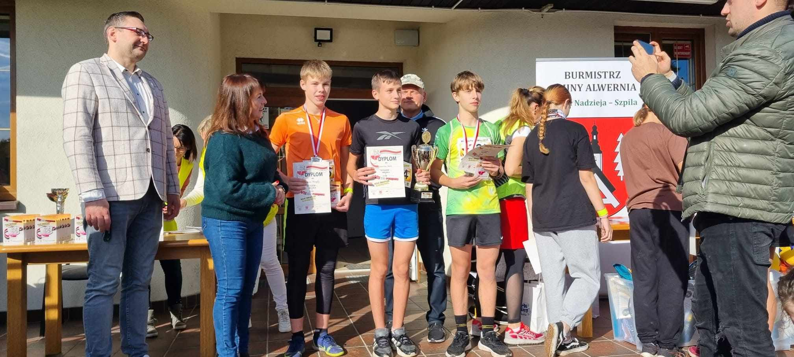

Moim drugim zainteresowaniem jest bieganie.
Co tydzień biorę udział w PARKRUN Chrzanów, gdzie każdy może przyjść i zrelaksować się w każdą sobotę o 9.00 w lesie poprzez bieganie, truchtanie, lub chodzenie. Biorę również udział w imprezach biegowych organizowanych w okolicy, starając się odnosić sukcesy.
